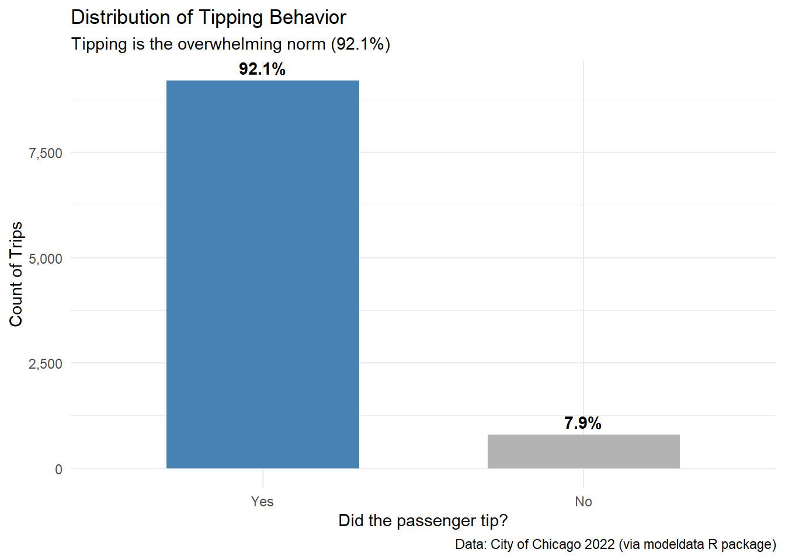
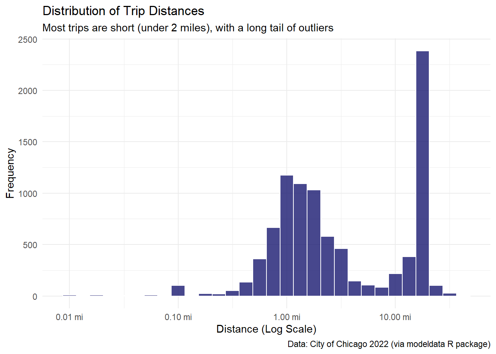
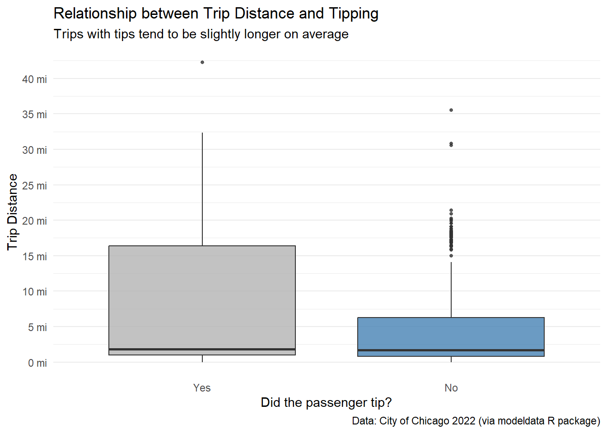
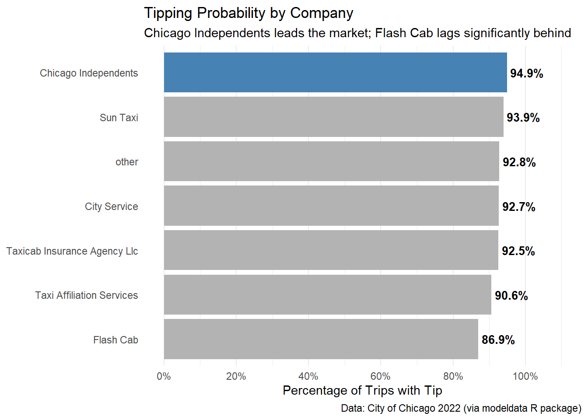
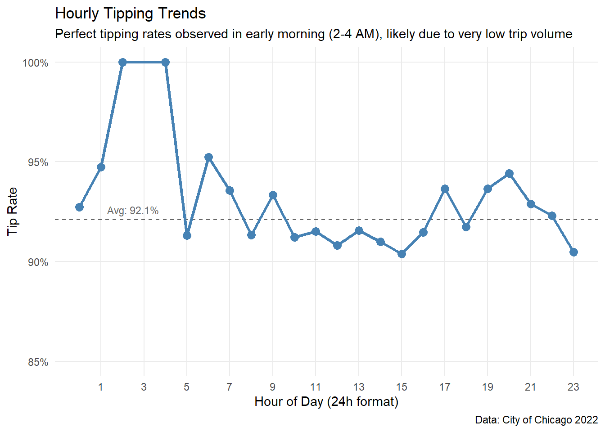
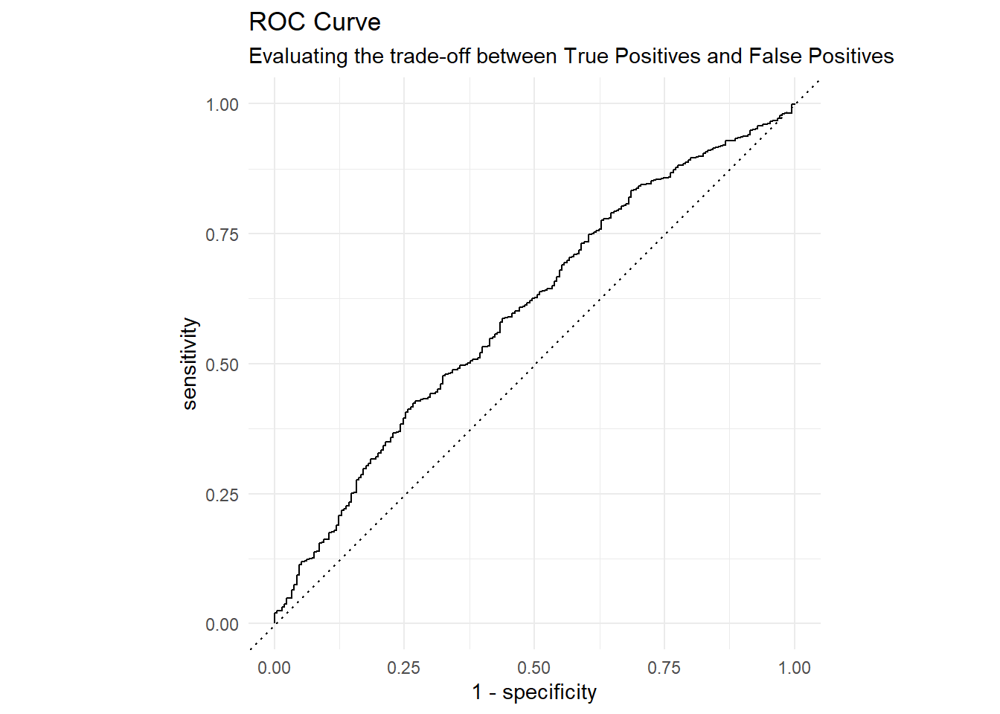

Code
library(tidyverse)
library(tidymodels)
library(scales)
library(modeldata)
library(skimr)Analysis of Chicago taxis
This report presents an exploratory data analysis (EDA) of Chicago taxi data. Leveraging the Tidyverse ecosystem and Tidymodels in R, the analysis focuses on visualizing and quantifying key factors that influence tipping behavior.
The data used in this report comprises a subset of taxi trips recorded in the city of Chicago during 2022. The dataset includes information on trip duration, location, and payment details, allowing for an analysis of factors influencing tipping behavior.
Key variables include trip distance, the specific taxi company, and temporal data (hour, day, month).
The primary goal of this investigation is to provide actionable insights for the Chicago Taxi Drivers Association. Specifically, this report seeks to answer three strategic questions to help drivers maximize their earning potential:
By addressing these questions, we aim to identify the key levers—such as trip selection and provider choice—that drive financial performance.
Bonus Chapter: Data Modeling

library(tidyverse)
library(tidymodels)
library(scales)
library(modeldata)
library(skimr)The dataset we will visualize is called taxi from modeldata R package. The following steps load and provide an initial overview of the dataset.
#Load data
data(taxi)
glimpse(taxi)Rows: 10,000
Columns: 7
$ tip <fct> yes, yes, yes, yes, yes, yes, yes, yes, yes, yes, yes, yes, y…
$ distance <dbl> 17.19, 0.88, 18.11, 20.70, 12.23, 0.94, 17.47, 17.67, 1.85, 1…
$ company <fct> Chicago Independents, City Service, other, Chicago Independen…
$ local <fct> no, yes, no, no, no, yes, no, no, no, no, no, no, no, yes, no…
$ dow <fct> Thu, Thu, Mon, Mon, Sun, Sat, Fri, Sun, Fri, Tue, Tue, Sun, W…
$ month <fct> Feb, Mar, Feb, Apr, Mar, Apr, Mar, Jan, Apr, Mar, Mar, Apr, A…
$ hour <int> 16, 8, 18, 8, 21, 23, 12, 6, 12, 14, 18, 11, 12, 19, 17, 13, …| Variable | Description |
|---|---|
tip |
Whether the rider left a tip. A factor with levels “yes” and “no”. |
distance |
The trip distance, in odometer miles. |
company |
The taxi company, as a factor. Companies with low frequency were binned as “other”. |
local |
Whether the trip’s starting and ending locations are in the same community. |
dow |
The day of the week the trip began (Factor). |
month |
The month in which the trip began (Factor). |
hour |
The hour of the day in which the trip began (Numeric). |
Before diving into specific questions, let’s examine the structure and integrity of the dataset.
# Complete summary of statistics and null values
skim_without_charts(taxi)| Name | taxi |
| Number of rows | 10000 |
| Number of columns | 7 |
| _______________________ | |
| Column type frequency: | |
| factor | 5 |
| numeric | 2 |
| ________________________ | |
| Group variables | None |
Variable type: factor
| skim_variable | n_missing | complete_rate | ordered | n_unique | top_counts |
|---|---|---|---|---|---|
| tip | 0 | 1 | FALSE | 2 | yes: 9209, no: 791 |
| company | 0 | 1 | FALSE | 7 | oth: 2715, Tax: 1694, Sun: 1382, Tax: 1231 |
| local | 0 | 1 | FALSE | 2 | no: 8117, yes: 1883 |
| dow | 0 | 1 | FALSE | 7 | Thu: 1958, Wed: 1746, Tue: 1628, Fri: 1571 |
| month | 0 | 1 | FALSE | 4 | Apr: 3178, Mar: 3142, Feb: 2036, Jan: 1644 |
Variable type: numeric
| skim_variable | n_missing | complete_rate | mean | sd | p0 | p25 | p50 | p75 | p100 |
|---|---|---|---|---|---|---|---|---|---|
| distance | 0 | 1 | 6.22 | 7.38 | 0 | 0.94 | 1.78 | 15.56 | 42.3 |
| hour | 0 | 1 | 14.18 | 4.36 | 0 | 11.00 | 15.00 | 18.00 | 23.0 |
The summary statistics above reveal a clean and well-structured dataset with zero missing values across all variables, ensuring that no imputation is required for this analysis.
Key observations include:
tip is highly unbalanced, with the vast majority of passengers (9,209 out of 10,000) opting to leave a tip.company variable has a significant number of observations categorized as “other” (2,715), suggesting a fragmented market with many smaller operators alongside major ones like Sun Taxi and Taxi Affiliation Services.# Bar chart to see the proportion of tips
taxi|>
count(tip) |>
mutate(
percentage = n / sum(n),
label = scales::percent(percentage, accuracy = 0.1)
) |>
ggplot(aes(x = tip, y = n, fill = tip)) +
geom_col(width = 0.6) +
geom_text(aes(label = label), vjust = -0.5, fontface = "bold") +
scale_y_continuous(labels = scales::comma) +
scale_x_discrete(labels = str_to_title) +
scale_fill_manual(values = c("steelblue", "gray70")) +
labs(
title = "Distribution of Tipping Behavior",
subtitle = "Tipping is the overwhelming norm (92.1%)",
x = "Did the passenger tip?",
y = "Count of Trips",
caption = "Data: City of Chicago 2022 (via modeldata R package)"
) +
theme_minimal() +
theme(legend.position = "none")
# Histogram with logarithmic scale to handle bias
ggplot(taxi, aes(x = distance)) +
geom_histogram(bins = 30, fill = "midnightblue", color = "white", alpha = 0.8) +
scale_x_log10(labels = scales::label_number(suffix = " mi")) +
labs(
title = "Distribution of Trip Distances",
subtitle = "Most trips are short (under 2 miles), with a long tail of outliers",
x = "Distance (Log Scale)",
y = "Frequency",
caption = "Data: City of Chicago 2022 (via modeldata R package)"
) +
theme_minimal()
Is there a relationship between the distance someone travels in a taxi and if they tip or not?
# 1. Boxplot
ggplot(taxi, aes(x = tip, y = distance, fill = tip)) +
geom_boxplot(alpha = 0.8, outlier.size = 1) +
scale_y_continuous(
labels = scales::label_number(suffix = " mi"),
breaks = seq(0, 50, 5)
) +
scale_x_discrete(labels = str_to_title) +
scale_fill_manual(values = c("steelblue", "gray70")) +
labs(
title = "Relationship between Trip Distance and Tipping",
subtitle = "Trips with tips tend to be slightly longer on average",
x = "Did the passenger tip?",
y = "Trip Distance",
caption = "Data: City of Chicago 2022 (via modeldata R package)"
) +
theme_minimal() +
theme(
legend.position = "none",
panel.grid.major.x = element_blank()
)
# 2. Data Evidence
taxi |>
group_by(tip) |>
summarise(
count = n(),
avg_dist = mean(distance, na.rm = TRUE),
p25_dist = quantile(distance, 0.25, na.rm = TRUE),
median_dist = median(distance, na.rm = TRUE),
p75_dist = quantile(distance, 0.75, na.rm = TRUE)
) |>
knitr::kable(
col.names = c("Tip?", "Total Trips", "Mean Dist", "25th %", "Median", "75th %"),
digits = 2,
align = "c",
caption = "Table 1. Distance Statistics by Tipping Status"
)| Tip? | Total Trips | Mean Dist | 25th % | Median | 75th % |
|---|---|---|---|---|---|
| yes | 9209 | 6.37 | 0.96 | 1.79 | 16.39 |
| no | 791 | 4.57 | 0.79 | 1.66 | 6.26 |
Figure 3. Comparative distribution of trip distances by tipping status, displaying the median, quartiles, and outliers.
Analysis:
The data reveals a clear behavioral split based on trip length:
Conclusion: While short trips are a toss-up, long-distance passengers are consistently more reliable tippers. Drivers accepting long fares face a much lower risk of not being tipped.
Do taxi passengers tend to tip more for the company Chicago Independents more than the other companies?
# 1. Data prep
company_analysis <- taxi |>
group_by(company) |>
summarise(
total_trips = n(),
tipped_trips = sum(tip == "yes"),
tip_rate = tipped_trips / total_trips
) |>
mutate(company = fct_reorder(company, tip_rate))
# 2. Visualization
ggplot(company_analysis, aes(x = tip_rate, y = company, fill = company == "Chicago Independents")) +
geom_col() +
geom_text(aes(label = scales::percent(tip_rate, accuracy = 0.1)),
hjust = -0.1, size = 3.5, fontface = "bold") +
scale_x_continuous(labels = scales::percent, limits = c(0, 1.1),
breaks = seq(0, 1, 0.2)
) +
scale_fill_manual(values = c("gray70", "steelblue")) +
labs(
title = "Tipping Probability by Company",
subtitle = "Chicago Independents leads the market; Flash Cab lags significantly behind",
x = "Percentage of Trips with Tip",
y = NULL,
caption = "Data: City of Chicago 2022 (via modeldata R package)"
) +
theme_minimal() +
theme(
legend.position = "none",
panel.grid.major.y = element_blank()
)
# 3. Summary
company_analysis |>
arrange(desc(tip_rate)) |>
knitr::kable(
col.names = c("Company", "Total Trips", "Tipped Trips", "Tip Rate"),
digits = 3,
align = "lccc",
caption = "Table 2. Tip Rates by Company Provider"
)| Company | Total Trips | Tipped Trips | Tip Rate |
|---|---|---|---|
| Chicago Independents | 781 | 741 | 0.949 |
| Sun Taxi | 1382 | 1298 | 0.939 |
| other | 2715 | 2519 | 0.928 |
| City Service | 1187 | 1100 | 0.927 |
| Taxicab Insurance Agency Llc | 1231 | 1139 | 0.925 |
| Taxi Affiliation Services | 1694 | 1534 | 0.906 |
| Flash Cab | 1010 | 878 | 0.869 |
Figure 4. Tipping rates by company provider, ranked by performance and highlighting the market leader.
Analysis:
When comparing “Chicago Independents” against the aggregate of all other companies, the data supports the hypothesis: Independents have a tipping rate of 94.9% versus an average of 91.8% for the rest.
However, a granular analysis reveals a more nuanced competitive landscape:
Conclusion: There is some to little evidence that the specific company brand drives tipping behavior. While “Chicago Independents” statistically leads the pack, the difference is marginal (~3%) and largely explained by the underperformance of a single competitor (Flash Cab) rather than a unique advantage of the leader.
Is there an optimal time of day (“Golden Hour”) when passengers are most generous?
# 1. Data Prep
hourly_analysis <- taxi |>
group_by(hour) |>
summarise(
total_trips = n(),
tip_rate = sum(tip == "yes") / n()
)
global_rate <- mean(taxi$tip == "yes")
# 2. Visualization
ggplot(hourly_analysis, aes(x = hour, y = tip_rate)) +
geom_hline(yintercept = global_rate, linetype = "dashed", color = "gray40") +
annotate("text", x = 2.5, y = global_rate+0.005, label = paste("Avg:", percent(global_rate, 0.1)),
color = "gray40", size = 3) +
geom_line(color = "steelblue", linewidth = 1.2) +
geom_point(color = "steelblue", size = 3) +
scale_y_continuous(labels = scales::percent, limits = c(0.85, 1)) +
scale_x_continuous(breaks = seq(1, 23, 2)) +
labs(
title = "Hourly Tipping Trends",
subtitle = "Perfect tipping rates observed in early morning (2-4 AM), likely due to very low trip volume",
x = "Hour of Day (24h format)",
y = "Tip Rate",
caption = "Data: City of Chicago 2022"
) +
theme_minimal() +
theme(
panel.grid.minor = element_blank()
)
# 3. Summary
hourly_analysis |>
arrange(desc(tip_rate)) |>
slice(1:5) |>
knitr::kable(
col.names = c("Hour", "Total Trips", "Tip Rate"),
digits = 3,
align = "ccc",
caption = "Table 3. Top Performing Hours (Note the low Total Trips)"
)| Hour | Total Trips | Tip Rate |
|---|---|---|
| 2 | 13 | 1.000 |
| 4 | 8 | 1.000 |
| 6 | 105 | 0.952 |
| 1 | 19 | 0.947 |
| 20 | 465 | 0.944 |
Figure 5. Temporal variation in tipping rates throughout the day, including the global average.
Analysis:
The temporal analysis reveals unexpected insights regarding early morning trips:
The Early Morning Anomaly: Surprisingly, the data shows a perfect tipping rate (100%) around 02:00 - 04:00 AM.
Stability during Business Hours: From 08:00 to 18:00, the tipping rate stabilizes near the global average (~92%), representing the most reliable period for drivers due to high passenger volume(>600 trips/hour).
Conclusion: Time of day is not a strong predictor of whether a passenger will tip or not. Aside from statistical anomalies in the early morning due to small sample sizes, tipping behavior remains remarkably consistent (between 90% and 93%) throughout the entire day.
Now that we understand the key factors individually, let’s combine them into a Logistic Regression Model. This allows us to quantify the probability of receiving a tip while controlling for multiple variables simultaneously (including time of year and day of week).
We split the data into training (75%) and testing (25%) sets to ensure our model performs well on unseen data. We also normalize numerical predictors to compare them on the same scale.
set.seed(123)
levels(taxi$tip) #checking the target's 2nd level [1] "yes" "no" # 1. Split: training/testing
taxi_split <- taxi |>
mutate(tip = fct_relevel(tip, "no", "yes")) |>
initial_split(prop = 0.75, strata = tip)
train_data <- training(taxi_split)
test_data <- testing(taxi_split)
# 2. Recipe: process
# Including control variables (dow, month)
taxi_rec <- recipe(tip ~ distance + company + local + hour + dow + month, data = train_data) |>
step_dummy(all_nominal_predictors()) |>
step_normalize(all_numeric_predictors()) |>
step_zv(all_predictors())
# 3. Model Spec: glm
taxi_spec <- logistic_reg() |>
set_engine("glm") |>
set_mode("classification")
# 4. Workflow: rec + model
taxi_wf <- workflow() |>
add_recipe(taxi_rec) |>
add_model(taxi_spec)
# 5. Fit: training the model
taxi_fit <- taxi_wf |>
fit(data = train_data)
# model summary
taxi_fit |>
extract_fit_parsnip() |>
tidy() |>
mutate(
odds_ratio = exp(estimate),
p.value = scales::pvalue(p.value)
) |>
select(Term = term, Log_Odds = estimate, Odds_Ratio = odds_ratio, P_Value = p.value) |>
knitr::kable(
digits = 3,
align = "lccr",
caption = "Table 4. Model Coefficients: Log-Odds and Odds Ratios"
)| Term | Log_Odds | Odds_Ratio | P_Value |
|---|---|---|---|
| (Intercept) | 2.548 | 12.777 | <0.001 |
| distance | 0.186 | 1.205 | <0.001 |
| hour | 0.034 | 1.035 | 0.434 |
| company_City.Service | -0.182 | 0.834 | 0.014 |
| company_Flash.Cab | -0.281 | 0.755 | <0.001 |
| company_Sun.Taxi | -0.065 | 0.938 | 0.430 |
| company_Taxi.Affiliation.Services | -0.264 | 0.768 | 0.001 |
| company_Taxicab.Insurance.Agency.Llc | -0.170 | 0.844 | 0.026 |
| company_other | -0.188 | 0.829 | 0.047 |
| local_no | 0.130 | 1.139 | 0.002 |
| dow_Mon | -0.143 | 0.867 | 0.051 |
| dow_Tue | -0.127 | 0.881 | 0.100 |
| dow_Wed | -0.096 | 0.908 | 0.229 |
| dow_Thu | -0.079 | 0.924 | 0.342 |
| dow_Fri | -0.184 | 0.832 | 0.015 |
| dow_Sat | -0.099 | 0.905 | 0.134 |
| month_Feb | -0.019 | 0.981 | 0.731 |
| month_Mar | 0.046 | 1.047 | 0.450 |
| month_Apr | 0.086 | 1.090 | 0.163 |
How well does the model distinguish between tippers and non-tippers? We use the Area Under the ROC Curve (AUC) and a confusion matrix analysis.
# 1. Generate predictions in Test Set
predictions <- taxi_fit |>
augment(test_data)
# 2. Performance Metrics
multi_metric <- metric_set(accuracy, sensitivity, specificity, roc_auc)
metrics_table <- multi_metric(predictions, truth = tip, estimate = .pred_class, .pred_yes, event_level = "second")
metrics_table |>
knitr::kable(
col.names = c("Metric", "Estimator", "Value"),
digits = 3,
caption = "Table 5. Model Performance Metrics"
)| Metric | Estimator | Value |
|---|---|---|
| accuracy | binary | 0.916 |
| sensitivity | binary | 1.000 |
| specificity | binary | 0.000 |
| roc_auc | binary | 0.601 |
# 3. Visualization: ROC
predictions |>
roc_curve(truth = tip, .pred_yes, event_level = "second") |>
autoplot() +
labs(
title = "ROC Curve",
subtitle = "Evaluating the trade-off between True Positives and False Positives"
) +
theme_minimal()
# 4. Confusion Matrix (Raw Numbers)
conf_matrix <- predictions |>
conf_mat(truth = tip, estimate = .pred_class)
conf_matrix Truth
Prediction no yes
no 0 0
yes 210 2290# 5. Heatmap
conf_matrix |>
autoplot(type = "heatmap") +
labs(
title = "Confusion Matrix",
subtitle = "Truth vs. Prediction (Darker is better frequency)"
)
Analysis of Model Limitations:
As seen in the Confusion Matrix, the model successfully identifies the majority class (“Yes”) but fails to capture the minority class (“No”). This happens because 92% of the data consists of tippers.
Since the Logistic Regression uses a standard probability threshold of 0.5, and the probability of tipping is almost always high, the model decides it is “safer” to predict “Yes” for everyone. To fix this in a future iteration, we would need to:
What actually drives tipping? This chart visualizes the Odds Ratios with 95% Confidence Intervals.
# Extract coefficients with Confidence Intervals
tidy(taxi_fit, conf.int = TRUE, conf.level = 0.95) |>
filter(term != "(Intercept)") |>
mutate(
# Transform Log-Odds to Odds Ratios (Multipliers)
estimate = exp(estimate),
conf.low = exp(conf.low),
conf.high = exp(conf.high),
# Determine Significance: If the interval crosses 1, it's not significant
is_significant = if_else(conf.low > 1 | conf.high < 1, "Significant", "Not Significant"),
term = str_remove_all(term, "company_|dow_|month_"),
term = fct_reorder(term, estimate)
) |>
ggplot(aes(x = estimate, y = term, color = is_significant)) +
# Reference Line (Neutral Effect = 1)
geom_vline(xintercept = 1, linetype = "dashed", color = "gray50") +
# Confidence Interval (Whiskers)
geom_errorbarh(aes(xmin = conf.low, xmax = conf.high), height = 0.2) +
# Point Estimate (Dot)
geom_point(size = 3) +
scale_color_manual(values = c("Not Significant" = "gray70", "Significant" = "steelblue")) +
labs(
title = "Predictor Importance (Odds Ratios)",
subtitle = "Points > 1 increase tipping odds. Points < 1 decrease them.\nGray bars indicate statistical uncertainty (not significant).",
x = "Odds Ratio (with 95% CI)",
y = NULL,
color = "Statistical Significance"
) +
theme_minimal() +
theme(legend.position = "bottom")
Predictor Significance Analysis:
Based on the p-values (visualized above by the color coding), we can draw important conclusions about what doesn’t matter:
month_Feb, Mar, Apr) and specific times (hour) appear as gray bars, indicating they are not statistically significant. This suggests that tipping culture is relatively stable throughout the year and day.While the model successfully identifies key drivers like Distance, Local and Company (as shown in the Odds Ratio chart), its overall predictive power is modest (AUC ~0.60).
Why? The act of tipping is highly subjective and likely influenced by factors not present in this dataset, such as:
Recommendation: To build a highly accurate predictive tool, future data collection should include “Trip Ratings” or “Customer Feedback” columns. However, for current strategic planning, the Logistic Regression remains valuable for inference—confirming that longer trips and specific taxi providers are the best levers to increase tipping probability.
To conclude this investigation for the Chicago Taxi Drivers Association, we have synthesized findings from both exploratory analysis and statistical modeling.